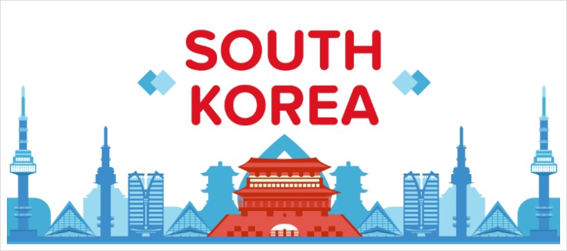

Basic Information about Korea

About Korea
The Korean Peninsula is located in North-East Asia. It is bordered by the Amnok River (Yalu River) to the northwest, separating Korea from China,
and the Duman River (Tumen River) to the northeast which separates Korea from both China and Russia.
The country itself is flanked by the Yellow Sea to its west and the East Sea to the east.
There are several notable islands that surround the peninsula including Jejudo, Ulleungdo and Dokdo.
Because of its unique geographical location, Korea is a very valuable piece of land and an international hub of Asia.
About Seoul
Seoul has been the capital of Korea for more than 600 years since the Joseon Dynasty (1392-1910).
It was referred to as "Hanyang"during the Joseon Dynasty.
Today's Seoul is a bustling metropolis, acting as the hub for political, economical, socialand cultural matters.
The Hangang River, which runs through the center of the city, divides Seoul into the culture and history-oriented northern region, and the business-oriented southern region.
Korean Food
Dining out is one of the great pleasures of visiting Korea, a country famous for its diverse native dishes. Korean cuisine is nutritious, well balanced and low in calories as it involves a wide variety of vegetables and fermented foods.
Bulgogi (Marinated, barbecued beef) and Bibimbap (Boiled rice mixed with vegetables) are the most famous.
Money & Currency
- Currency Exchange
Foreign banknotes and traveler's check can be exchanged at foreign exchange banks and other authorized moneychangers.
- Travelers Checks
Accepted, but may be difficult to change in smaller towns. To avoid additional exchange rate charges, travelers are advised to take Traveler's check in US Dollars.
- Banking Hours
Monday to Friday 09:00 - 16:00
ATM Operating Hours 08:00 - 22:00
Credit Card
Diners Club, Visa, American Express and MasterCard are widely accepted at major hotels, shops and restaurants in the larger cities. Check with your credit card company for details of merchant acceptability and other services which may be available.
Tax & Tipping
Value-added tax (VAT) is levied on most goods and services at a standard rate of 10% and is included in the retail price. In tourist hotels, this 10% tax applies to meals as well as other services and is added into the bill. Tipping is not a traditional Korean customs. A 10% service charge is added to your bill at all tourist hotels and 3-10% at some major restaurants.
Business Hours
Government office hours are usually from 9:00am to 6:00pm on weekdays and closed on weekends. Banks are open from 9:00am to 4:00pm on weekdays and closed on Saturday and Sunday. Major stores are open every day from 10:30am to 8:00pm including Sundays.
Time Zone
Korean time is 9 hours ahead of Greenwich Mean Time (GMT+9).
Electricity
The standard electricity supply is 220-volts AC/60 cycles. Most hotels may provide outlet converters for 110 and 220 volts. It is advised to check with the hotel beforehand.
Phone Info
The international dialing code (001, 002 or 00700), then the country code, followed by the area code, and then the phone number. You can rent a cellular phone at the Incheon International Airport and Gimhae International Airport. For the details, please visit the Information Desk.
1330 Korea Travel Phone
Korea Travel Phone 1330, operated by the Korea Tourism Organization, is Korea's leading tourism information hotline, providing a variety of information on travel in Korea to both Korean and foreign tourists. Korea Travel Phone 1330 is becoming an increasingly useful service.
Emergency Calls
International SOS Korea provides a 24-hour emergency service for participants.
| 1339 |
For medical emergencies / First aid patient |
| 119 |
Emergencies for fire / Rescue & Hospital service |
| 112 |
Police |
Lost Property
In the event of misplaced or lost property, contact the Lost and Found Center of the Seoul Metropolitan
Police Bureau. 102, Hongik-dong, Seongdong-gu +82-2-22994282